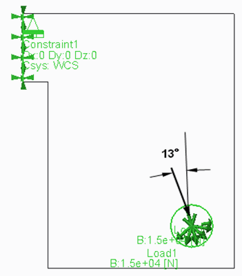
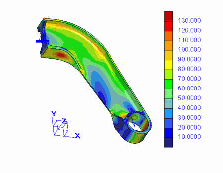
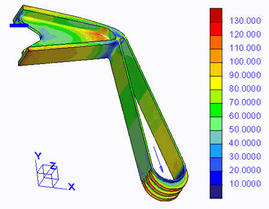
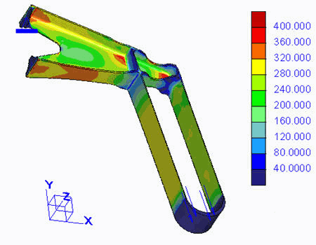

练习: 熟练工人的工件 (挑战性练习)
目标
成功完成此练习后，您将能够：
- 优化杠杆的形状，在确保其强度的前提下最小化其质量。
假定背景
您的任务是优化杠杆的形状，以便在确保其强度的前提下使其质量达到最小。
- 您具有两个可选择的材料选项，“铝”(Aluminum) 或“钢”(Steel)。
- 最大包络和载荷条件如下图所示。
- 在孔位置安装了一个非常坚硬的螺栓来传递力。
- 您可以在给定的包络中自由设计零件。只有需要约束零件以及施加力的曲面/位置不能进行修改。
- 可以在给定的包络中最小化要约束曲面的整体尺寸。对轴孔的要求同样如此。
在此示例中，已在模型中定义了载荷和约束。在应用小变形与大变形理论时，您的研究应围绕调整网格、在模型中分配材料以及检查结果展开。
 Figure 1 - 杠杆安装空间的包络尺寸
Figure 1 - 杠杆安装空间的包络尺寸
 “拭除未显示的”(Erase Not Displayed)
“拭除未显示的”(Erase Not Displayed) 
 Simulate_Analysis\Journeyman
Simulate_Analysis\Journeyman
 JOURNEYMAN.PRT
JOURNEYMAN.PRT
-
任务 1. 约束零件并应用载荷。
1. 打开零件模型并检查当前尺寸。
2. 约束该模型并应用一个 15 kN 的载荷，角度为 13°，如图所示。

-
任务 2. 定义模型的材料。
1. 为该模型指定材料：钢或铝。
- 钢属性：
- 弹性模量：200000 MPa
- 泊松比：0.3
- 密度：7.8 g/cm3
- 屈服强度：400 N/mm2
- 铝属性：
- 弹性模量：70000 MPa
- 泊松比：0.3
- 密度：2.8 g/cm3
- 屈服强度：130 N/mm2

两种材料的失效准则均为“畸变能”(Distortion Energy) (von Mises 应力)。在此练习中不考虑安全因素。
- 钢属性：
-
任务 3. 定义和运行静态分析，并检查结果。
1. 定义静态分析。使用单通道自适应 (SPA) 收敛算法。
2. 检查结果并查看关键区域。如有必要，修改 Creo Parametric 中的模型并反复重新运行模型。当失效指标小于或等于 1 而且您对设计尺寸感到满意时，解决方案完成。
如果使用 SPA 算法运行钢制包络零件几何，具有的最大 von Mises 应力约为 70 MPa。请注意，这是约束附近的奇异应力。质量接近 20.7 kg。找到的最佳解决方案应达到质量小于 0.5 kg。
-
任务 4. 建议的最佳方法。
1. 通过与设计失效指标为 1 的零件时所采用的方式来完成任务。考虑哪种载荷类型 (拉伸、压缩、折弯、扭转等) 可以使其达到最佳。
2. 避免考虑现实生活中杠杆的常规外观，这样在概念上您就对模型设计有了一个良好的开始。切记，错误的初始设计可能限制任何后续质量减少的成功性。
3. 添加应力高的材料，并减少应力载荷不明显的材料。
4. 对杠杆刚度无任何要求。
-
任务 5. 示例解决方案。
1. Journeyman 使用实际方法生产的零件通常类似于所示零件。它是通常用于航空和航天工业的普通铝铣削设计。
使用的横截面为 T 轮廓和双 T 轮廓。该设计为折弯且在约束附近有较大载荷。具有顶部和底部金属带，中间有大块厚度渐增的壁，用来传递剪切载荷。请注意，T 形截面与施加的载荷方向不完全在一条直线上，这导致了材料的加载不平衡。
2. 异常的解决方案如图中的 von Mises 条纹图所示。由于纯拉伸对于完全利用材料强度很理想，所以将杠杆细分为两个不同区域 - 一个区域外观类似吊带，具有理想拉伸，另一个区域为经典直折弯、但折弯非常短的加载杠杆。请注意，理想的拉伸是最佳应力状态才能达到高材料利用率。这导致了质量的明显减少。
3. 该图将这一理念发挥到极致：尽管使用的是钢而不是作为典型轻量化设计材料的铝。该零件的质量还可以再减少。使用的窍门是设计的吊带不是通常的绳索吊带，而是具有两个与施加的载荷完全在一条直线上的细平行带，这样进一步减少了载荷力。

练习就此结束。